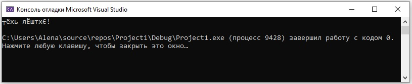
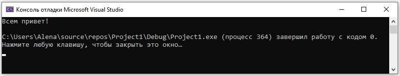

План занятия:
- Библиотека locale.h и подключение русского языка
- Библиотека math.h и математические функции
- Практикум
Библиотека locale.h и подключение русского языка
По умолчанию функция printf() выводит только латинские символы и цифры, если написать в кавычках текст на руском языке получим "абракадабру".
Запустим эту программу:
#define _CRT_SECURE_NO_WARNINGS
#include <stdio.h>
int main()
{
printf("Всем привет!");//вывод текста на русском языке
return 0;
}
Получим вот такой результат:

В библиотеке <locale.h> находится функция setlocale(LC_ALL,"Russian"). Данная функция позволяет установить любую локаль. В нашем случае мы выбираем локаль "Russian".
*В программировании лока́ль — это набор параметров, включая набор символов, язык пользователя, страну, часовой пояс, а также другие предустановки, которые пользователь ожидает видеть в пользовательском интерфейсе.
Изменим нашу программу:
#define _CRT_SECURE_NO_WARNINGS
#include <stdio.h>
#include <locale.h> //подключение библиотеки для функции setlocale
int main()
{
setlocale(LC_ALL, "Russian");//установим локаль "Russian"
printf("Всем привет!\n");//вывод текста на русском языке
return 0;
}
Получим вот такой результат:

Библиотека math.h и математические функции
В библиотеке math.h находятся все математические функции. В таблице ниже приведены только некоторые из них. Перед использованием любой из математических функций необходимо подключить библиотеку math.h.
#include <math.h> //подключение библиотеки math.h
Математические функции
| Название | Описание | Пример |
|---|---|---|
| pow(x,y) | возведение числа x в степень y | pow(2,7)=128 pow(9, 0.5)=3 |
| sqrt(x) | квадратный корень из x | pow(2,7)=128 pow(9, 0.5)=3 |
| fabs(x) | абсолютное знвчение x | если x>0, то fabs(x)=x если x=0, то fabs(x)=0 если x<0, то fabs(x)=-x |
| ceil(x) | округление x до наименьшего целого не меньше х | ceil(9.2)=10 ceil(-9.8)=-9 |
| exp(x) | экспоненциальная функция e в степени x | exp(1)=2.718282 exp(2)=7.389056 |
| log(x) | логарифм натуральный x (по основанию e) | log(2.718282)=1 log(7.389056)=2 |
| log10(x) | логарифм десятичный x (по основанию 10) | log10(1)=0 log10(10)=1 |
| sin(x) | синус x(x в радианах) | sin(0)=0 |
| cos(x) | косинус x(x в радианах) | cos(0)=1 |
| tan(x) | тангенс x(x в радианах) | tan(0)=0 |
Задачи
- В прямоугольном треугольнике даны два катета, необходимо рассчитать гипотенузу.
- Ввести вещественное число, вывести его дробную часть
- Ввести координаты 2 точек (x, y). Вывести расстояние между ними
- Пользователь вводит радиус окружности. Найти и вывести площадь круга
- Ввести a и b. Вывести a^b
- Найти корни уравнения x^2 + 3x - 4 = 0
#define _CRT_SECURE_NO_WARNINGS
#include <stdio.h>
#include <locale.h>
#include <math.h>
int main()
{
setlocale(LC_ALL, "Russian");
double a, b, c;
printf("Введите два катета: \n");
scanf("%lf%lf", &a, &b);
c = sqrt(pow(a, 2) + pow(b, 2));
printf("Гипотенуза треугольника с катетами %lf и %lf равна %lf", a, b, c);
return 0;
}
#define _CRT_SECURE_NO_WARNINGS
#include <stdio.h>
#include <locale.h>
int main()
{
setlocale(LC_ALL, "Russian");
float number;
printf("Введите число: \n");
scanf("%d", &number);
printf("%f\n", number-(int)number);
return 0;
}
#define _CRT_SECURE_NO_WARNINGS
#include <stdio.h>
#include <locale.h>
#include <math.h>
int main()
{
setlocale(LC_ALL, "Russian");
int x1, x2, y1, y2;
printf("Введите координаты: \n");
printf("x1 = ");
scanf("%d", &x1);
printf("y1 = ");
scanf("%d", &y1);
printf("x2 = ");
scanf("%d", &x2);
printf("y2 = ");
scanf("%d", &y2);
float L = sqrt( pow((x1-x2), 2.) + pow((y1-y2), 2.) );
printf("L = %f\n", L);
return 0;
}
#define _CRT_SECURE_NO_WARNINGS
#include <stdio.h>
#include <locale.h>
int main()
{
setlocale(LC_ALL, "Russian");
int r;
printf("Введите радиус окружности: \n");
scanf("%d", &r);
printf("S = %f", 2 * 3.14 * r);
return 0;
}
#define _CRT_SECURE_NO_WARNINGS
#include <stdio.h>
#include <locale.h>
#include <math.h>
int main()
{
setlocale(LC_ALL, "Russian");
int a, b;
printf("Введите a: ");
scanf("%d", &a);
printf("Введите b: ");
scanf("%d", &b);
printf("a^b = %f", pow(float(a), b));
return 0;
}
#define _CRT_SECURE_NO_WARNINGS
#include <stdio.h>
#include <math.h>
int main()
{
int a = 1, b = 3, c = -4;
float D = pow(b, 2.) - 4 * a * c;
printf("%f\n", D);
float x1 = (-b + sqrt(D)) / (2 * a);
float x2 = (-b - sqrt(D)) / (2 * a);
printf("x1 = %f\nx2 = %f\n", x1, x2);
return 0;
}